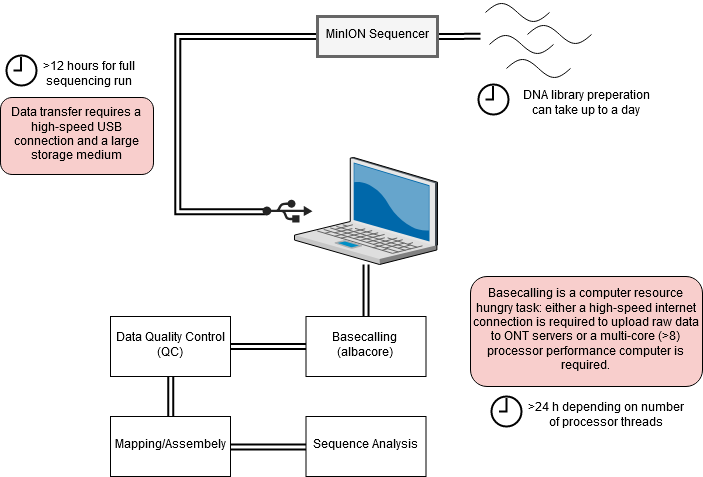
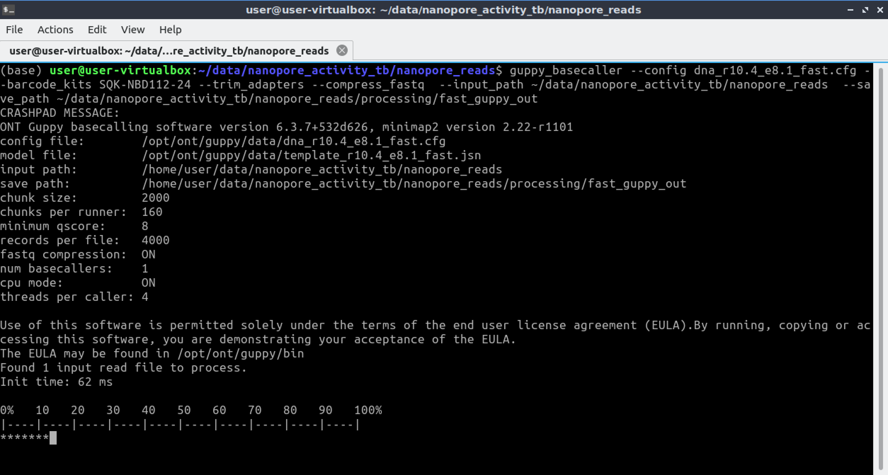

Introduction
In this session we are going to be looking at data generated by third-generation nanopore sequencing technology. Developed by Oxford Nanopore Technologies (ONT), these platforms make use of an array of microscopic protein ‘pores’ set in in an electrically resistant membrane which guide strands of DNA or RNA through them. As the nucleic acid passes through, a voltage differential is created corresponding to sets of 3 bases, which is then measured and recorded by the sequencer. Oxford Nanopore’s most popular platform is the MinION which is capable of generating single reads of up to 1 million base pairs (1Gb).

The MinION is one of 5 highly scalable platforms developed by ONT. High-throughput applications such as the GridION and PromethION use an array of nanopore flowcells to produce between 5 to 48 times more data than the MinION alone – outputting up to 48 TB of data in one run. More downscaled solutions such as The Flongle and SmidgION use a smaller, single flowcell to generate data. The MinION is a highly portable sequencing platform, about the size of a large USB flash drive. This technology enables researchers to perform sequencing analyses almost anywhere, providing they have the correct equipment to prepare the DNA libraries and analyse the output data.
A complete sequencing run on the MinION platform can generate upwards to of 1TB of raw data, and downstream analyses require a significant amount of compute power – multicore high performance processors and large amounts of RAM. This poses a significant logistical challenge for researchers who want to take advantage of the platform’s portability aspect.

Activity Briefing
Today we will be working with data generated by the ZIBRA project (Faria et al., 2017). The ZIBRA group used real-time portable sequencing during the 2015 South American Zika virus (ZIKV) outbreak to provide a surveillance framework for tracking ZIKV spread into other geographic regions. With data generated using the MinION during the outbreak, we will follow a typical nanopore data analysis pipeline to produce a whole-genome Zika virus sequence to explore the capabilities of nanopore sequencing and the kind of data it can produce. We will then use maximum-likelihood (ML) techniques for phylogeographic reconstruction, to try and find out where our isolate came from and place it in the context of the wider South American Zika.

Basecalling
To convert the raw data output produced by the MinION sequencing run in to a usable form we need to perform a process called basecalling. This converts the raw electronic signal which is read as the DNA passes through the pore in to base reads – A, C, T or G. To do this we will use a program called Albacore – a software package designed by ONT which uses recurrent neural nets (RNN) to interpret the raw signal, which comes in a proprietary .fast5 format file and convert it in to the standard .fastq format, for use downstream in our pipeline.
Navigate to the ~/nanopore_activity/basecalling folder in the home directory, and we’ll start the first step.
cd ~/nanopore_activity/basecalling The following line of code is composed of these elements:
read_fast5_basecaller.py – calls the basecalling program
-f FLO-MIN106 -k SQK- LSK108 – this tells the program about the configuration of the sequencer
-i raw_fast5_dir – The -i argument tells the program where to look for the input files
-t 2 – this is the argument telling the program how many process threads to use – the more you use the quicker the process will be.
-s output_dir – this argument points toward the output directory
-o fastq – this argument determines the output format
read_fast5_basecaller.py -f FLO-MIN106 -k SQK-LSK108 -i raw_fast5_reads -t 2 -s basecalling_output -o fastq --disable_filteringYou should now see the bascalling process begin, and a progress bar appear. This may take some time depending on the performance of your machine.

When the process in completed, you will find the basecalled reads in a .fastq formatted file. Navigate there by typing the following in to the terminal:
cd ~/nanopore_activity/basecalling/basecalling_output/workspacehead fastq_runid_dcb79bbb002d7acdb262be3be0484eca7fc2f015_0.fastqBasecalling - Quality Control
Before moving on to the analysis steps, it is important to gauge the quality of your sequencing output. There are numerous factors which dictate the quality of the output data, spanning between quality of the input material, library preparation to software and hardware failure. We will look at some important metrics produced by the sequencer which will give us a feel for how well the run went.
In order to get the run metrics in to a useful form will use an R script to produce a range of plots which we will use to judge the quality of the sequencing run.
Rscript ~/nanopore_activity/scripts/MinIONQC.R -i ~/nanopore_activity/basecalling/basecalling_output/sequencing_summary.txtQuestion 1
Question 2
Kraken QC
Another method of quality control, is to check our reads for sequence contamination from other organisms.
Using our basecalled reads we will perform an analysis using Kraken. Kraken is a tool which sifts through each read in a .fastq file and crosschecks it against a database of microorganisms. The output is a taxonomic assignment of each read, enabling to identify if any contamination has occurred. In this case we will be looking for any reads which do not belong to the Zika genome.
Let’s navigate to the kraken folder to begin the analysis:
cd ~/nanopore_activity/krakenThe following line of code is composed of these elements:
Kraken – calling the Kraken executable
kraken --db ~/nanopore_activity/kraken/KDB/ - this points kraken to the database of microorganisms to cross-check our reads against
--output temp.krak – this argument locates the output file
basecalled_reads.fastq – this argument locates the input file
Type the following command in to the terminal to unleash the Kraken:
kraken --db ~/nanopore_activity/kraken/KDB/ --output temp.krak basecalled_reads.fastqBefore interpreting the results we need to convert the kraken output in to something we can read:
kraken-translate --db ~/nanopore_activity/kraken/KDB/ temp.krak > kraken_outputNow we have a file called kraken_output. Open that up in a text editor and browse the data.
Question 3
Mapping and Visualisation
No that we have our reads, and have completed the basecalling and QC processes we will map the reads on to a reference genome and perform variant calling. For the first step we will use the BWA program. You may be familiar with the mapping process from previous sessions. Using BWA we will align our .fastq reads to a reference genome. We need to make some slight modifications to the mapping command used previously, as we need to accommodate for some of the features of the nanopore data.
Move to the mapping directory:
cd ~/nanopore_activity/mappingWe first need to index the reference sequence:
bwa index reference.fastaNow we can use ‘bwa mem’ to align the basecalled reads to a reference sequence. The ‘ont2d’ argument tells the program that we are using nanopore reads, a requisite we will discuss when we visualise the data:
bwa mem -x ont2d ./reference.fasta basecalled_reads.fastq > alignment.samAs before, we now need to convert our alignment .sam file in to a .bam formatted file:
samtools view -q 15 -b -S alignment.sam > alignment.bamNest, we need to sort the .bam formatted file:
samtools sort alignment.bam -o sorted.bamFinally we need to index the sorted bam file:
samtools index sorted.bamNow that we have successfully mapped the reads to a reference we can visualise them in Tablet, to get a closer look at what our sequencing run looks like.
Using the below animation as a guide, open up tablet and load the sorted.bam and the reference.fasta files, then click on the ‘contig’ in the pane on the left side of the screen. You will see a loading bar, then the alignment will be shown. In the left ‘contig’ pane you will fine some metrics associated with this dataset.
Try bringing up some of the reads you have worked with in previous session. Remember to select the appropriate ‘sorted’ .bam file and the correct reference fasta. Does anything strike you about the contrasting features of the data sets? Scrolling downwards in the alignment viewer on Tablet, what do you notice about the ‘structures’ formed by the reads?
Question 4
One of the foremost caveats of nanopore sequencing is the high error rate. It is important that we use programs which are sensitive to that - which is why we used the 'ont2d' argument in the mapping stage. Try switching the colour scheme to ‘Variants’ by using the tab in the top left corner of the interface.
You can take a closer look at the individual bases by zooming in, either by using the sliding bar on the ‘Home’ tab at the top of the screen or by using ‘Ctrl’+Mouse Scroll. The red squares in the ‘Variants’ view represent the mismatched reads.
Coverage, Depth and Variant Calling
Before starting on variant calling, we first need to do one more QC step. This analysis will tell us how well our reads have aligned to the reference and how comprehensive our sequencing run was. Two key metrics are required for this: reference coverage and read depth. Read coverage tells us the percentage of the reference which has had sequencing reads aligned to it, which allows us to identify any regions that may have not been successfully sequenced. Depth is an equally as important metric: it tells us how many different reads have mapped to the same position. This is a particularly important statistic if you intend on doing variant calling, as regions with low depth may fall prey to false calls due to the random errors we have in our nanopore data. With a high enough read depth, we can be fairly sure that these errors will be ignored.
We will now use R to generate a plot to allow us to assess the coverage and depth.
Navigate to the ‘variant_calling’ folder and we’ll begin:
cd ~/nanopore_activity/variant_calling We need to use Samtools, a versatile package you will be familiar with, to extract the depth statistics from the .bam alignment file we generated in the previous section. This will generate a file called ‘depth_statistics’.
samtools depth sorted.bam > depth_statisticsNext, we will use the R statistical package to generate a plot based on the data samtools generated. Simply type ‘R’ in to the terminal to initialise the R interface.
ROnce you have initialised R, you can enter the following two lines of code, one after the other. The first command will load the ‘ depth_statistics’ file, and the second will generate the plot
data<-read.table("depth_statistics")plot(data$V3,type="l",xlab="Reference Position", ylab="read Depth")You can quit R by typing:
quit()bcftools mpileup -q 8 -B -I -Ou -f reference.fasta sorted.bam | bcftools call -mv -Oz -o calls.vcf.gzLet's take a look inside the VCF file to see what kind of data it contains:
zless calls.vcf.gzNext, we need to index the .vcf file:
bcftools index calls.vcf.gzbcftools consensus -f reference.fasta calls.vcf.gz -o consensus_sequence.fastaSequence Alignment
Now we are going add our consensus sequence to a multiple sequence alignment, to prepare the dataset for phylogenetic inference. First, navigate to the ‘phytogeography’ folder:
cd ~/nanopore_activity/phylogeneticsIn this folder you will find the consensus sequence you have just generated and a pre-built Zika virus sequence dataset, containing the entire* protein coding sequences of all publicly available ZIKV isolates. Let’s open up the dataset in an alignment viewer and take a look at that this kind of data looks like. Like most of the tools you have encountered during this course there are many alternative programs out there that will perform similar tasks, in this instance we will use Aliview. Let’s call up the program and load our dataset:
aliview zika_dataset.fastaWith Aliview open, you should now see the dataset we will be working with for the rest of the activity. In the left pane you should see the sequence metadata: the unique sequence accession number, the species the virus was isolated from, the country of origin and the date of collection. Spanning across horizontally, you should see the genome sequence to which the metadata is associated with. On the pane at the bottom of the window, you should see a few statistics about the dataset. Have a browse and familiarise yourself with the data and the software interface.
Question 4
Before we continue with any analyses, we first have to add our new sequence and then align the dataset. Alignment is the process of arranging sequence data in such a way that each sequence may be compared to each other. For this we will use a program called ‘mafft’. This program will rearrange the sequences based on similarity, so that they may be compared in future analyses.
Close the Aliview window, and open up the terminal ensuring you are still in the ‘phylogenetics’ directory. First, we will add our new consensus sequence to the database by using the ‘cat’ (concatenate) command:
cat zika_dataset.fasta consensus_sequence.fasta > zika_all.fastaNext, we will call up the alignment program and point it in the direction of our unaligned ‘zika_all.fasta’ dataset. The alignment command is made up of the following elements:
Mafft – calls the mafft alignment software
zika_all.fasta – the input file
> - this symbol ‘points towards’ the output file
zika_all_aligned.fasta – this is the name of the output file
mafft zika_all.fasta > zika_all_aligned.fastaThe program may take a short while to run. Alignments generally can take a very long time; some of you may be familiar with using the ClustalO or MUSCLE web-based servers. While these are a few of the more popular options, MAFFT has its merits, particularly in being able to build large alignments in an exceptionally short amount of time.
Optional Activity
In order to gain a better understanding of the differences between the seemingly more pathogenic South American Zika and the less pathogenic Asian strains, Yuan et al. (2017) investigated recent stable mutations in the genome of contemporary South American Zika strains. Using mouse models and recombinant Zika strains, they studied the in vivo neurovirulence phenotypes of three contemporary ZIKV strains isolated in 2015–2016 in South America, and compared them with the phenotypes of their Asian ancestral strain isolated in Cambodia in 2010. They found a particular mutation, S139N, which in vitro, made the virus more infectious for mouse and human neural progenitor cells and promoted apoptosis.
Let’s find this site in our dataset and see if our isolate has the S139N genotype:
We can translate the dataset by pressing CTRL + SHIFT + T.
You should now see the same dataset expressed as amino acid sequences. Notice all of the ‘X’ residues in the sequences. These are stop codons, however they should not be there, in fact these residues are ‘nonsense’ – codon changes which result in a stop codon. In order to get the ‘true’ amino acid sequence, we need to select the correct reading frame. Press SHIFT + - (shift and the minus/hyphen key). You should now see fewer stop codons in the alignment, and a change in the amino acid sequence.
By using the scroll bar at the bottom of the window, we can now navigate to the position in the alignment with the S139N mutation to assess what the genotype of our isolate is. In this instance you will find this mutation at the 138th position, due to our alteration of the reading frame.
What can you tell about our 'consensus' isolate? Do you notice any pattern in the geography of the isolates which contain the S genotype?
Phylogenetics: RAxML
RAxML (Randomized Accelerated Maximum Likelihood) is the tool we will be using today to infer our phylogenetic tree. It is a popular program for phylogenetic analyses of large datasets. Its main strengths are its speed and a robust search algorithm resulting in phylogenies with good likelihood scores. The maximum likelihood method uses standard statistical techniques for inferring probability distributions, and to assign probabilities to particular possible phylogenetic tree topologies (the shape of the tree). Hopefully you should be familiar with the basic concepts underpinning phylogenetics, and their applications: so let’s get stuck in.
We first need to decide on a substitution model: the mathematical framework which describes the way in which nucleotides change across time. In this instance we will use the GTRGAMMA model. Explaining these models is beyond the scope of this tutorial, however it is important to understand why you would use a particular model. The reason we have selected GTRGAMMA (General Time Reversable – Gamma + Invariant sites), is because the GTR substitution model is one of the more robust, widely used models available and most importantly is applicable to our dataset.
Now we have our multiple sequence alignment, we can now start the phylogenetic inference. The following command consists of these elements:
raxmlHPC – this calls the RAxML program
-T 1 – This command tells the program how many process threads it can use – the more threads available the quicker the task will complete
-m GTRGAMMA – specifies the substitution model
-s input.fasta – specifies the input sequence file
n output_prefix – specifies the output file prefix
-p 11334 – specifies a random number seed with which to start the parsimony inferences
-k – specifies that we want printed branchlengths with bootstrapping
-f a – specifies that we want the task performed in one instance of the program
-x – specifies the random seed for the bootstrapping process
-N – specifies the bootstrap replicates
From inside the ‘phylogenetics’ folder, run the following command in the terminal:
raxmlHPC -T 1 -m GTRGAMMA -s ./zika_all_aligned.fasta -n zika_phylogeny -p 11334 -k -f a -x 13243 -N 1000 -#1Now that RAxML has completed its run we can now visualise the results in Figtree – a phylogenetic tree visualisation software package.
Navigate to the 'figtree' folder and run the following command:
cd ~/nanopore_activity/phylogenetics/figtreefigtree RAxML_bipartitions.zika_phylogenyNow that you have opend up the tree in Figtree, you first need to assign the bootstrap data to a catagory. We can then organise the tree in a way that it is more easy to view. Using the animation below as a guide, select the 'Midpoint Root' and 'Increasing Node Order' settings.
Use the scroll bars in the Figree window, and on the pane on the left hand side of the windows to zoom and navigate the tree.
You can use the search bar in the top right corner of the screen to find our 'CONSENSUS' sequence.
Question 5
We can use the phylogenies similar to the one we have just generatred to map transmission and the spread of diseases.
Conclusion
Hopefully having completed this activity, you will have gained a better understanding of how to process third-generation nanopore data, and the applications of such a technologies in an infectious disease outbreak scenario. The pipeline we have used in this activity is one of a hundred you can use to carry out similar tasks, but chosing the right tools for the job is paramount when performing sequence analysis.
The use of front-line genomics during outbreaks is a somewhat novel practice, but with tools such as the MinION and its downstream applications, it is possible to monitor the dynamics of disease outbreaks in real-time to inform on-the-ground containment stratergy and provide a framework for survaillance, both in a preventitive and a post-outbreak context.
If you have any further questions about this activity or your own applications of it, you can either ask a demonstrator or contact me on: daniel.ward1@lshtm.ac.uk